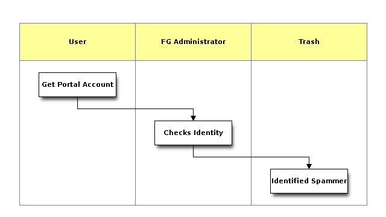

| Name | Description |
|---|---|
| Get Portal Account | Apply for a portal account at https://portal.futuregrid.org |
| Checks Identity | Administrator checks the data submitted. |
| Identified Spammer | SPammers will be deleted without notification. |
In order to utilize any FutureGrid resource, you must posses a FutureGrid portal account. Thus, apply for your **portal account **before you attempt anything else. This account is used to gather some information that we will use in the next steps. You must make sure that the information is complete before you proceed to the second step. FutureGrid performs basic verification of the information you provide when creating an account, so it may take a little while before your account is approved. Once you have a portal account, please proceed.
Please note that you cannot access FutureGrid resources until you complete the next steps.
Here are a few tips that make it easy for you
You need to either apply for a new FutureGrid project or join an existing project to use FutureGrid resources. To apply for a new project, fill out the project creation form. To join an existing project, ask the project lead or project manager for that project to add you to their project using that same form. If the project is set to “accept public join request”, you may also send a request in the portal. To do this, first view the project listand go to the project detail page by clicking the project title. If the project is set by the project lead to “accept join request”, then you’ll see a large gray ‘Join this project’ button in the upper right corner of the page. Click the button to send the join request to the project lead and manager so they can process your request.
Once you have been approved to work on a project, you will be able to access the resources and services that your project has requested and been authorized to use. See the project creation form for a list of FutureGrid resources and services.
Here are a view links that may help you:
In order to be able to log into the started VMs, among other purposes, you need to provide FG with a secure-shell (ssh) public key. If you are already a frequent user of ssh, and have a private and public key pair, it is perfectly reasonable to provide your public key. It’s public, after all.
To upload the chosen public key:
This step should be fairly instantaneous.
If you are not familiar with ssh key generation, or if you have difficulty generating a key pair, please inform yourself about ssh keys or contact us via our help form . Detailed instructions on how to generate ssh key pairs will be added to this document in the near future.
To use FutureGrid you must be part of a valid “project”. Project leaders are requested to fill out project applications about the use of FutureGrid. The form gathers some important information about their projects to be conducted. At this time this information is publicly shared. This information is used to report and document not only to us but also to our sponsors which activities are conducted on FutureGrid. The more precise you are in your descriptions and filling out the forms the better we can highlight your project. Once a project is formed, project members can join a project. This must be conducted by the project lead. A user retains an active account on FutureGrid when they are in at least one active project. A user that is inactive does not have to apply for a new account, but instead apply for a new project. Once that project is activated the user account becomes active.
Please note the current process of applying for account may change.
To get access to FutureGrid (FG), you need to register your project in it. Please go to:
to apply for a new project. It may take some time for your project to get approved. No projects will be approved over the weekend.
In case you like to join an existing project, please find the list of projects at:
Clicking on a project title will bring you to the project information page, where you may see a large gray button on the upper right corner of the page named ‘Join this project’. Click to send join request to that project. Please notice the PI of the project has to approve you before you are part of that project.
Some project may not accept external members so there would be no join button for them. Please notice this behavior is controlled by the owner of the project.
You can always communicate with the project PI through external channel of the FutureGrid portal if you know him/her in person by letting him/her know your portal username. He/she can then directly add you as a member to his/her project without going through the join request process through the portal.
The Project PI has agreed to certain reporting requirements to provide information to FutureGrid. He will be responsible to make sure that they are completed and also implemented with the users joining the project. Thus the user is responsible to comply with the terms of the project in regards to reporting and acknowledgements in case of publications. Each project PI has the responsibility to communicate such requirements to the members and managers. The project agreements overwrite the individuals agreement.
The cloud accounts are handled currently separately from the HPC account creation process. In fact the Eucalyptus clouds are disjunctive on each machine and have their own user management. For Nimbus uploading your ssh key is sufficient. The turnaround time for you getting access to the system is typically between 30 minutes and one day.
Please be kind and only apply for these cloud accounts if you really need them.
To reset or add a new you ssh key, please update your keys first by visiting the page
and change the keys as needed. Your reset will take 30 minutes to one day to propagate through the system services.
You are not allowed to use password less keys. Your account may be deactivated.
All you need to do to obtain an HPC account is to be in a valid project and upload your ssh key. Typically you will get the account within one business day. There will be typically no accounts approved in non business hours including weekends.
Please add your SSH keys in your profile which you can find at:
Once you have done that, please go back to this form and complete it. After submission, this form will create an e-mail request to FutureGrid. The FG administrators may contact you to verify this request.
The project lead is responsible for determining if you can be added to the project.
Note: Do not send mail to FG staff members about joining a project, as we are not managing individual project memberships
To view your current memberships and status of your account application, please visit
Simply visit the ssh-key page and upload a new key. YoU can optionally delete other keys if you do n longer need them.
Once you have uploaded your SSH key, the Nimbus, Eucalyptus, and OpenStack access will be granted. Please visit the manual pages for more details on accessing them.